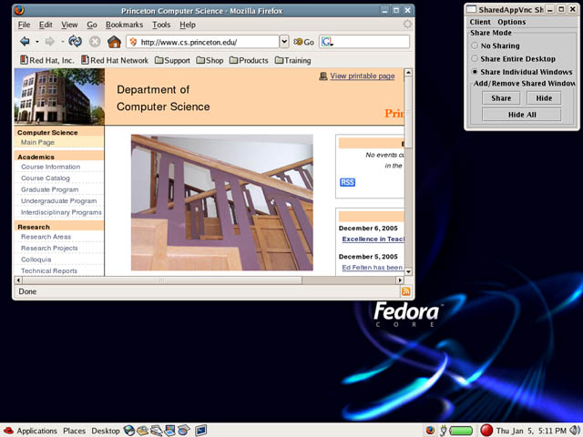
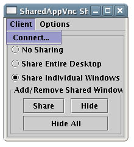
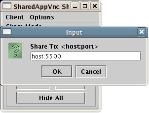
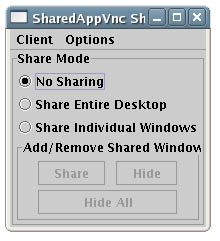
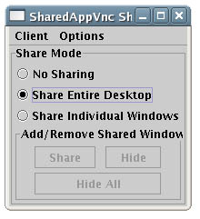
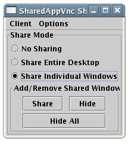
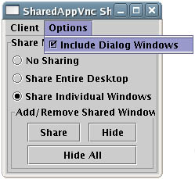

The Linux version of SharedAppVnc requires running three pieces of software: the server, viewer and control applet. The server, which allows windows to be shared, will be started automatically when the X11 server starts (X11 must first be configured to use SharedAppVnc). The viewer is a java application that is started from the command line. It receives and displays shared windows. The control applet is a GUI that lets the user control the server. It lets the user select which windows to share or hide, or which viewers to connect to.
Screenshot of the sharedAppController (upper-right corner) being used to share windows.

Starts automatically when X11 server is started.
It must first be properly configured. After configuring and restarting the X11 server, search for "vnc" in /var/log/Xorg.0.log or comparable log file to see if it started successfully.
Viewer:
Start the viewer from a command prompt:
The simplest way to start it is in listening mode. It will it wait for server connections.
>sharedAppViewerThe viewer can also initiate a server connection on startup. Typically the SharedAppVnc server is listening on port 5900+displaynum. So for display :0 port will be 5900.
>sharedAppViewer -host <sharedappvnc-server> -port <port>Regardless of whether a host is specified, the viewer automatically listens for incoming connections on port 5500. When a new connection is received it starts a new thread to handle that connection.
Note: previous command was runviewer
Control GUI:
Start the control GUI from a command prompt:
>sharedAppController [-passwd <passwd-file>] [-display <display_num>]
Passwd-file is the vnc password file. The sharedAppController will not prompt you for a password, so unless you specify a password file, it may not be able to access the server. Display_num is the display that the local SharedAppVnc Server is running on (i.e. :0). Typically you will be starting sharedAppController on the same local display that the server is running on so you don't need to specify display_num. It will use the $DISPLAY environment variable if not specifiedNote: the executable windowshare must be in a directory within the search path (windowshare is part of the SharedAppVnc Linux release).
A vnc password file should be generated using the 'vncpasswd' command. When you configure the X11 server you must tell it where this password file is. Note the server can't expand paths such as ~/.vnc/passwd. You'll need to use a full path such as /etc/vnc/passwd.
The default passwd path for sharedAppController is /etc/vnc/passwd. If you store your passwd file here then you don't need to pass any arguments. Normal invocation of sharedAppController would then be
>sharedAppControllerNote: previous command was javactrl
Verify that the server is started correctly by looking in the /var/log/Xorg.0.log (or /var/log/XFree86.0.log) file. Search for lines with "vnc" in them. If the module was successfully loaded, you will see lines such as...
(II) Module vnc: vendor="xf4vnc Project, see http://xf4vnc.sf.net (4.3.0.999)"
compiled for 4.3.99.902, module version = 1.1.0
Module class: XFree86 Server Extension
ABI class: XFree86 Server Extension, version 0.2
(II) Loading extension VNC
An failure may be reported as...
(II) LoadModule: "vnc"
(WW) Warning, couldn't open module vnc
(II) UnloadModule: "vnc"
(EE) Failed to load module "vnc" (module does not exist, 0)
NOTE: your XFree86.0.log file will produce errors regarding the loading of rfbkeyb and the rfbmouse drivers. This can safely be ignored as these drivers are embedded within the vnc.so binary. You'll get something like this...
(II) LoadModule: "rfbmouse" (WW) Warning, couldn't open module rfbmouse (II) UnloadModule: "rfbmouse" (EE) Failed to load module "rfbmouse" (module does not exist, 0) (II) LoadModule: "rfbkeyb" (WW) Warning, couldn't open module rfbkeyb (II) UnloadModule: "rfbkeyb" (EE) Failed to load module "rfbkeyb" (module does not exist, 0)
Start the sharedAppController. If it is able to contact the vnc server
succesfully it will report.
>Connected to server successfully
If sharedAppController isn't able to connect to the server, and you've verified the server is running, then you probably don't have your password set up properly. Make sure you've run 'vncpasswd' to create a password file, copy the file to a common location such as /etc/vnc/passwd. Check in the /etc/X11/xorg.conf file that the 'rfbauth "/etc/vnc/passwd"' is set correctly. Also make sure you are invoking the controller as 'sharedAppController -passwd /etc/vnc/passwd'.
Start the sharedAppViewer. When sucessfully started it should report...
>Determining Screen Resolution....
>Display Resolution: 0,0:1024X768
>listening on port 5500
Once these three components report success, you are set up correctly.
Typically the server initiates a connection to the client. This can be done through the sharedAppController dialog window. From the "Client" menu select "Connect..." and then enter the client you want to connect to. The default port for the client is 5500.
 
The client can also initiate a connection a initialization. From the command
line run. Note the default port for the server is 5900. The client will listen
for connections from other servers after establishing this initial connection
>sharedAppViewer -host serverhost -port 5900
Troubleshooting: The vnc server will report status and errors in /var/log/Xorg.0.log. Look at the end of that file for most recent errors when trying to connect to a client. Verify the client firewall settings are correct and that the client viewer is running.
The sharedAppController has three sharing modes: 1) No Sharing, 2) Entire Desktop, 3) Individual Windows
No Sharing - When the top radio button is selected, nothing from the desktop will be shared.

Desktop Sharing - When the middle radio button is selected, the entire desktop will be shared

Window Sharing - When the bottom radio button is selected, individual windows can be shared. The "Add/Remove Shared Windows" panel will become enabled.

To Share a Window - To share a window, click on the "Share" button. The cursor will then turn into a "+". Move your cursor over the window you want to share and click on it.
To Hide a Window - To hide a shared window, click on the "Hide" button. The cursor will turn into a "+". Move your cursor over the window you want to hide and click on it.
To Hide All Windows - Click on the "Hide All" button and any shared windows will stop being shared.
Include Dialog Windows - If you want to automatically share "child" windows of an application, select "Include Dialog Windows" from the "Options" menu. If you only want to share the windows you have chosen, unselect this option.

Troubleshooting: The vnc server will report status and errors in /var/log/Xorg.0.log. Look at the end of that file for most recent errors when trying to share windows. Verify their is a connection to the client viewer.
There are four binaries that need to be installed
>cd sharedAppVnc/Viewer/sharedAppVncViewer/
>make
Binaries will be in this same directory after build completes.
Complete installation as in Installation from Binaries section.
To run SharedAppVncServer on Display :0 it is necessary to modify the XF86Config file as follows:
(note: this information comes from xf4vnc documentation page http://xf4vnc.sourceforge.net/doc.html)
* Modify the /etc/X11/xorg.conf (or /etc/X11/XF86Config) with the modifications as below......
* Make sure you use the Option 'usevnc' to actually enable VNC on that device!!!!!
The following sample xorg.conf file has the lines you must add highlighted with Bold font.
--------------- Sample xorg.conf -----------------------
# XFree86 4 configuration created by pyxf86config
Section "ServerLayout"
Identifier "Default Layout"
Screen 0 "Screen0" 0 0
InputDevice "Mouse0" "CorePointer"
InputDevice "Keyboard0" "CoreKeyboard"
InputDevice "vncMouse" "ExtraPointer"
InputDevice "vncKeyboard" "ExtraKeyboard"
EndSection
Section "Files"
RgbPath "/usr/X11R6/lib/X11/rgb"
FontPath "unix/:7100"
EndSection
Section "Module"
Load "dbe"
Load "extmod"
Load "fbdevhw"
Load "glx"
Load "type1"
Load "vnc"
EndSection
Section "InputDevice"
Identifier "Keyboard0"
Driver "kbd"
Option "XkbModel" "pc105"
Option "XkbLayout" "us"
EndSection
Section "InputDevice"
Identifier "Mouse0"
Driver "mouse"
Option "Protocol" "IMPS/2"
Option "Device" "/dev/input/mice"
Option "ZAxisMapping" "4 5"
Option "Emulate3Buttons" "yes"
EndSection
Section "InputDevice"
# vnc mouse
Identifier "vncMouse"
Driver "rfbmouse"
EndSection
Section "InputDevice"
# vnc keyboard
Identifier "vncKeyboard"
Driver "rfbkeyb"
EndSection
Section "Monitor"
Identifier "Monitor0"
VendorName "Monitor Vendor"
ModelName "LCD Panel 1024x768"
HorizSync 31.5 - 48.5
VertRefresh 40.0 - 70.0
Option "dpms"
EndSection
Section "Device"
Identifier "Videocard0"
Driver "ati"
VendorName "Videocard vendor"
BoardName "ATI Rage Mobility"
Option "usevnc" "on" # Important
- this must be set to "on" for module to load
#Typical options would be
Option "useraccept" "off"
Option "localhost" "on"
Option "rfbauth" "/etc/vnc/passwd"
#Other options available are...
#
By default, no password is required.
# The next rfbauth uses the root password for vncserver
#Option "rfbauth"
"/etc/vnc/passwd"
#Option "rfbport"
"5900"
# The use one of the next ...shared options ("nevershared"
is the default)
#Option "nevershared"
#Option "alwaysshared"
#Option "dontdisconnect"
# To activate the http server
#Option "httpdir" "/usr/share/vnc/classes"
#Option "httpport"
"5800"
# For XEvents
# The local user must accept the new connection.
# An X application must be used to send the acceptance back
to the server.
# Option "useraccept"
# Only listen on the localhost interface
# Option "localhost"
# Listen on a specific interface
# Option "interface" "192.168.0.1"
# View only session
# Option "viewonly"
# Option "loginauth"
EndSection
Section "Screen"
Identifier "Screen0"
Device "Videocard0"
Monitor "Monitor0"
DefaultDepth 24
SubSection "Display"
Viewport 0 0
Depth 16
Modes "800x600" "640x480"
EndSubSection
SubSection "Display"
Viewport 0 0
Depth 24
Modes "1024x768" "800x600" "640x480"
EndSubSection
EndSection
Section "DRI"
Group 0
Mode 0666
EndSection
--------------- End sample xorg.conf -----------------------
This project was developed by Kai Li's research group at Princeton University Computer Science Department and funded by the SciDAC FusionGrid project.
Lead Developer: Grant Wallace 
Please use the Sourceforge "Tracker" functionality to report bugs or requests http://sourceforge.net/projects/shared-app-vnc/
Hosted by Sourceforge.net